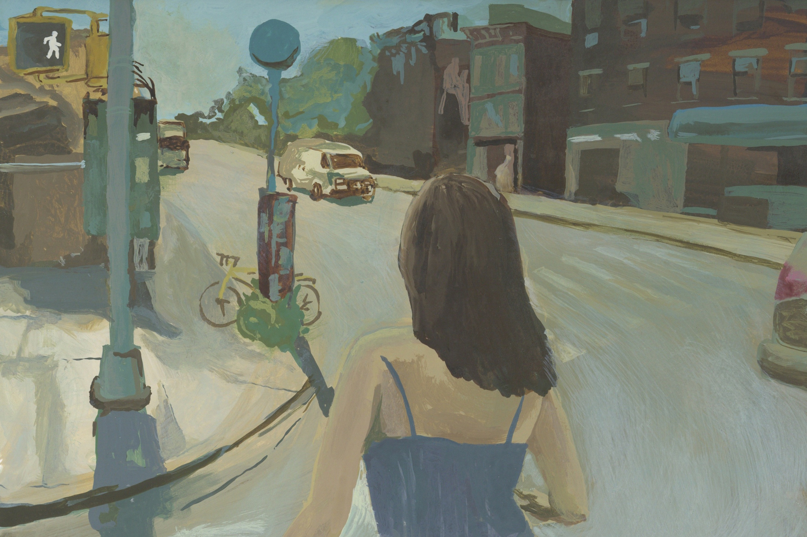

I am a writer and editor based in Berlin.
As of late, I'm working as an Editorial Assistant at Cabinet Magazine. I also co-run Choo Choo Press, a Risograph zine press, with my friend Emily Bluedorn, who also happened to make the painting above.
Other non-literary interests and pleasures include: diners (Waffle House counts), desserts of almost every variety, artistic collaboration, going to the movies, and Hawaiian shirts.
Poetry:
- “Billet Doux,” (Bayou Magazine, 2024)
- “Marsh,” (Poet Lore, 2023)
- “Candyland Haibun,” “I-Towards a Definition,” (The Rational Creature, 2023)
- “Plastic Summer,” (The Cortland Review, 2022)
- “Still More Beautiful,” Winter 2021. Emily Bluedorn animated a reading of this poem to lovely effect.
- “Pure Pleasure,” (The Massachusetts Review, 2021)
- “Self Portrait as a Lachrymal Vase,” “Swarovski Bright,” (The Vassar Review, 2021)
- “A Softer Kind of Drowning,” “Imitation Crab,” (The Louisville Review, 2020) “A Softer Kind of Drowning” reprinted in Verse Daily, 2021.
Nonfiction:
- “Executions,” (Sine Theta Magazine, 2024)
- “Love Letter to Ben L.,” (Salt Hill Journal, 2022) Nominated for a Pushcart Prize.
- “Susan Baker’s How to Humiliate Your Peeping Tom,” “The Six Times Future Raps ‘Nobu’ on Jumpman,” (The Drift Magazine, 2020)
Fiction:
- “Now and Forever,” (Cherry Tree, 2024)
If you’d like to work together or just chat, you can reach me here:
Instagram: @tay.zhang
Twitter: @tayxzhang
Email: taylorzhangx@gmail.com